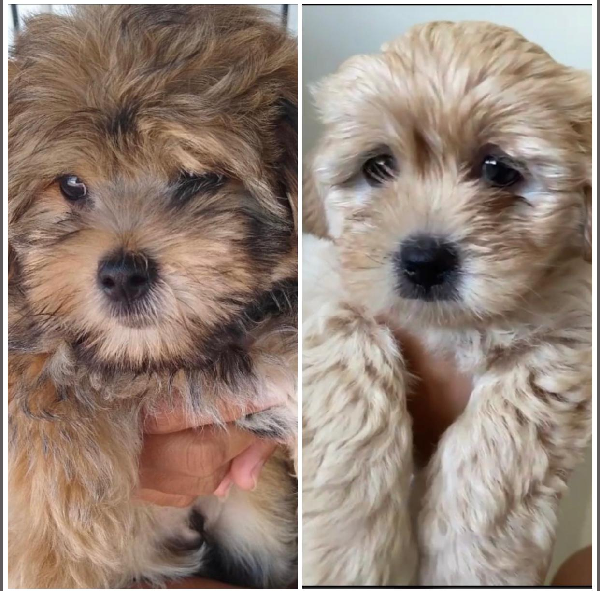
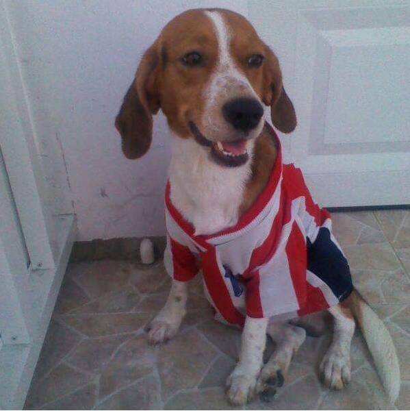
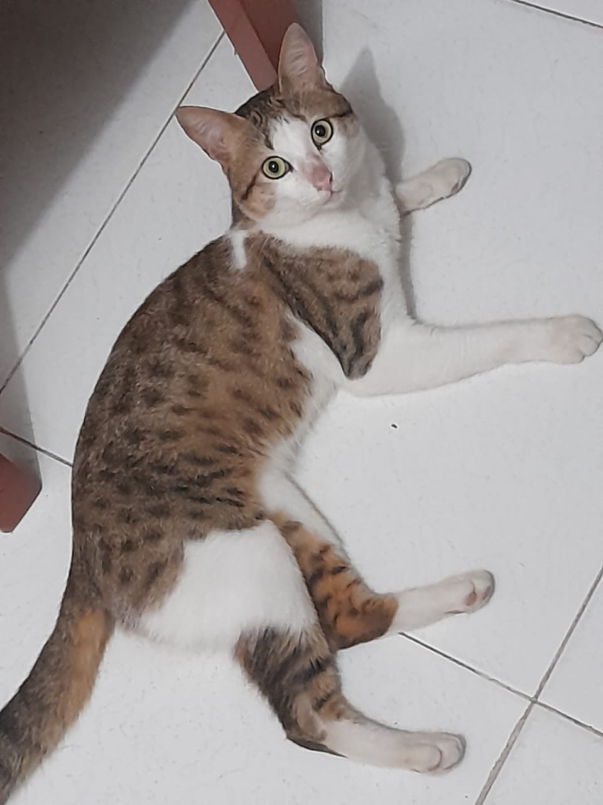
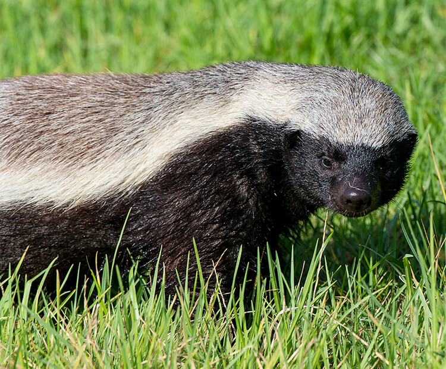
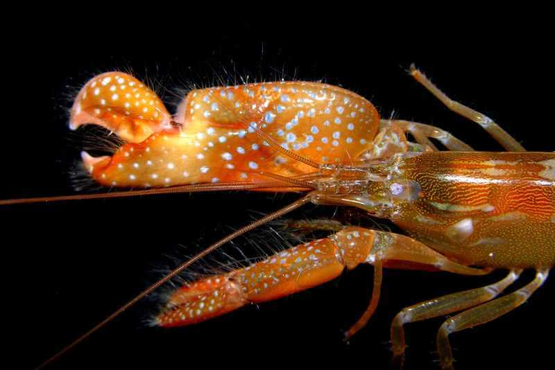
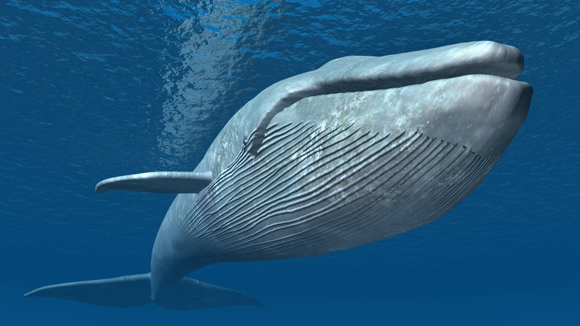

Buggy and his son

The dog on the left is my actual dog, it is a shihtzu and the dog on the right is its son. I have had Buggy for the past 6 years. He is very restless but I love him.

The dog on the left is my actual dog, it is a shihtzu and the dog on the right is its son. I have had Buggy for the past 6 years. He is very restless but I love him.

Lucas was the dog of my father i knew it since i had like 5-7 years old. It was very afectionate playfull

Haku is the cat of my grandmother and it think that is he king of the house. I have to give him the food and love when he want

The honey badger is a very interesting animal and one of my favorite animals, it is very aggressive and it is known for being the most fearless animal in the world (it holds a Guinness World Record). .

The pistol shrimp is a very interesting animal, it is known for its ability to create a loud noise what converted it in one of the most loud animals in the world by snapping its claw. This noise can stun or even kill small prey. I find it fascinating how such a small creature can have such a powerful weapon worth mentioning this animal only measures around 5 centimeters .

The blue whale is the largest animal on Earth, and it is also one of the most magnificent. I have never seen one in person but i would like to see one someday.